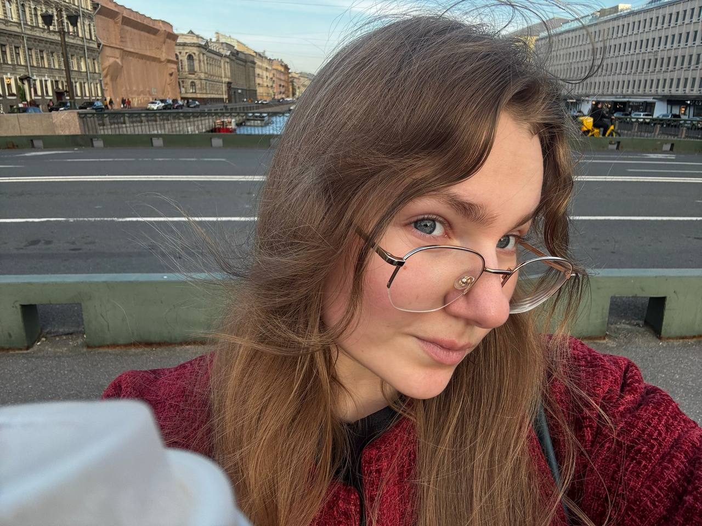
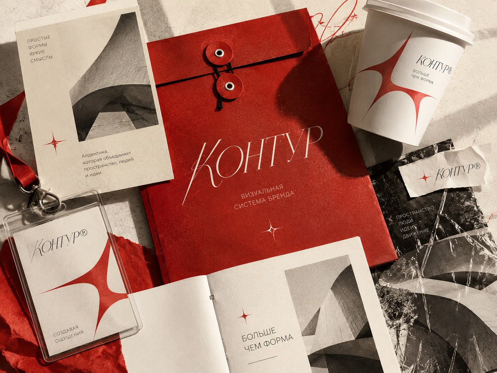
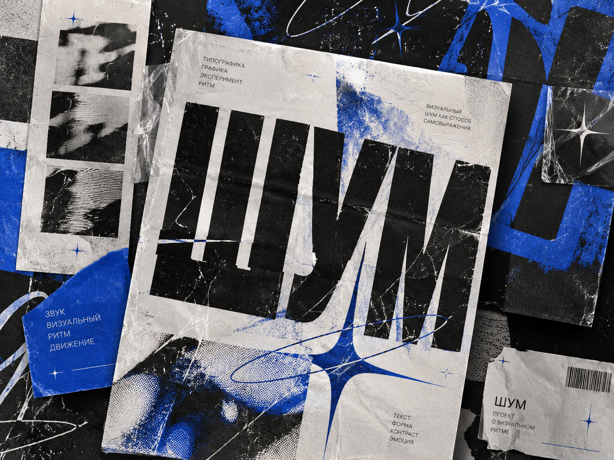
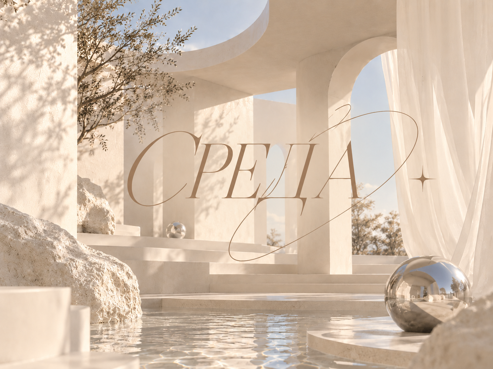

Hello! I'm AKSENCHIK
Графический дизайнер. Совмещаю работу и учёбу, создаю визуальные системы и экспериментальную графику.
СПбГУПТД4 КУРС
ДИЗАЙНЕР2026
PORTFOLIO
✦
AKSENCHIK
✦
AKSENCHIK

Графический дизайнер. Совмещаю работу и учёбу, создаю визуальные системы и экспериментальную графику.
Я Ксюша AKSENCHIK, дизайнер и студентка 4 курса СПбГУПТД.
Мне нравится находить новые прочтения привычных вещей и превращать их в понятные визуальные решения. Для меня важно, чтобы дизайн не только привлекал внимание, но и оставался удобным, логичным и работал на свою задачу.
СМОТРЕТЬ РАБОТЫМне 21 год, я учусь на 4 курсе СПбГУПТД по направлению «Прикладная информатика в дизайне» и параллельно работаю над реальными проектами.
Работаю с индивидуальными заказчиками, создаю визуальное оформление, постеры и афиши.
Пробую себя в разных направлениях — от айдентики и типографики до веб-дизайна и 3D.
«Дизайн — это способ выражать чувства через форму, цвет и смысл.»
Каждый проект начинаю с погружения в тему: изучаю контекст, анализирую аналоги и обсуждаю задачу с клиентом.
Особенно люблю работать с типографикой и цветом, искать неожиданные сочетания и превращать идеи в понятные визуальные решения.
Сейчас я совмещаю учёбу с работой над клиентскими проектами и продолжаю развиваться в разных направлениях дизайна.
Мне интересны проекты, где можно создать целостную визуальную систему — выразительную, узнаваемую и при этом функциональную.
Несколько проектов, которые показывают разные стороны моей работы и визуального мышления. Здесь я экспериментирую с айдентикой, графикой и пространством.

Айдентика бренда, построенная на лаконичной графике и выразительной типографике. В основе проекта — создание целостного визуального языка, который легко адаптируется к разным носителям.
ПОСМОТРЕТЬ ПРОЕКТИК
Экспериментальный графический проект, исследующий взаимодействие типографики, цвета и визуального шума. Контрастные элементы объединяются в динамичную систему с собственным ритмом и характером.
ПОСМОТРЕТЬ ПРОЕКТИК
3D-проект, посвящённый взаимодействию пространства, света и архитектурных форм. Минималистичная сцена построена на мягкой геометрии, спокойной палитре и ощущении воздуха.
ПОСМОТРЕТЬ ПРОЕКТИКРаботаю с визуальной айдентикой, графикой и цифровыми форматами — от идеи и первых эскизов до готовой подачи проекта.
Информатика в дизайне
4 курс · 2023–2027
КУРС ПО ВИЗУАЛЬНОЙ КОММУНИКАЦИИ
Graphic Design Specialization // California Institute of the Arts
КУРС ПО ГРАФИЧЕСКОМУ ДИЗАЙНУ
Графический дизайнер // Яндекс Практикум
КУРС ПО НЕЙРО СЕТЯМ
Повселневное использование ии // Щелочь
Если у вас есть проект, идея или предложение о сотрудничестве — напишите мне. Давайте создадим что-нибудь интересное вместе.